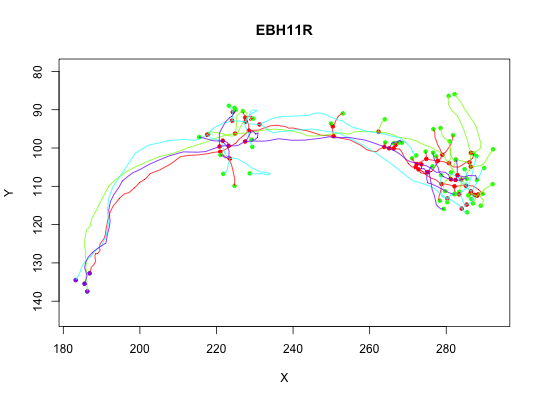
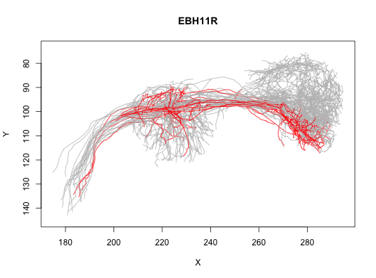

2D plots of the elements in a neuronlist, optionally using a subset expression
Usage
# S3 method for neuronlist plot(x, subset = NULL, col = NULL, colpal = rainbow, add = NULL, boundingbox = NULL, ..., SUBSTITUTE = TRUE)
Arguments
- x
- a neuron list or, for
plot3d.character, a character vector of neuron names. The default neuronlist used by plot3d.character can be set by usingoptions(nat.default.neuronlist='mylist'). See ?natfor details. - subset
- Expression evaluating to logical mask for neurons. See details.
- col
- An expression specifying a colour evaluated in the context of the dataframe attached to nl (after any subsetting). See details.
- colpal
- A vector of colours or a function that generates colours
- add
- Logical specifying whether to add data to an existing plot or make
a new one. The default value of
NULLcreates a new plot with the first neuron in the neuronlist and then adds the remaining neurons. - boundingbox
- A 2 x 3 matrix (ideally of class
boundingbox) that enables the plot axis limits to be set without worrying about axis selection or reversal (see details) - ...
- options passed on to plot (such as colours, line width etc)
- SUBSTITUTE
- Whether to
substitutethe expressions passed as argumentssubsetandcol. Default:TRUE. For expert use only, when calling from another function.
Value
-
list of values of
plot with subsetted dataframe as attribute
'df'
Description
2D plots of the elements in a neuronlist, optionally using a subset expression
Details
The col and subset parameters are evaluated in the context of the dataframe attribute of the neuronlist. If col evaluates to a factor and colpal is a named vector then colours will be assigned by matching factor levels against the named elements of colpal. If there is one unnamed level, this will be used as catch-all default value (see examples).
If col evaluates to a factor and colpal is a function then it will be used to generate colours with the same number of levels as are used in col.
Examples

# plot one class of neurons in red and all the others in grey plot(Cell07PNs, col=Glomerulus, colpal=c(DA1='red', 'grey'), WithNodes=FALSE)
# subset operation plot(Cell07PNs, subset=Glomerulus%in%c("DA1", "DP1m"), col=Glomerulus, ylim=c(140,75), WithNodes=FALSE)